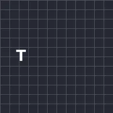
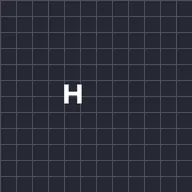
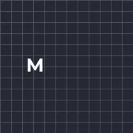
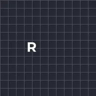
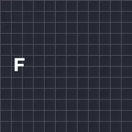
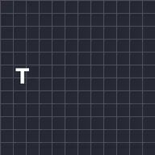

Tekstblips

Typt de tekst letter voor letter uit met een korte blip per letter, zoals een personage dat praat in een game. Kies een Stem en stel dan de Toonhoogte in, hoe snel de letters verschijnen en hoe lang er na leestekens wordt gepauzeerd. Spaties en leestekens blijven stil.
Tekstblips typt de tekst letter voor letter uit en speelt bij elke letter een korte blip, zoals een personage dat praat in een game. De app maakt de blips zelf. Ze spelen samen met de andere geluiden van het project, in het voorbeeld en in de export.
- Stem is Klassiek, Zacht, Diep, Hoog, Robot, Piep, Typemachine, Chiptune of Skelet. Eigen geluid vraagt om een audiobestand en speelt dat af als blip; het bestand wordt net als elk ander geluid bij het project bewaard. Toonhoogte zet de blip hoger of lager in halve tonen, en Toonvariatie maakt elke blip een beetje anders. Seed geeft een ander patroon van toonhoogtes.
- Snelheid is hoeveel letters er per seconde worden getypt. Blip elke speelt een blip bij elke letter, elke tweede letter, enzovoort.
- Spaties en leestekens zijn stil. Pauze bij leestekens wacht na . , ! ? ; en : voordat de volgende letter komt.
- Vertraging wacht even voordat het typen begint. Zet Uittypen uit om de hele tekst meteen te tonen en alleen het geluid te houden.
- Volume bepaalt hoe hard de blips klinken.
Met de voorinstellingen Held, Monster, Robot, Snelle prater en Typemachine ben je snel op weg.
Instellingen
| Instelling | Type | Bereik | Standaard |
|---|---|---|---|
| Stem | Keuze | Klassiek, Zacht, Diep, Hoog, Robot, Piep, Typemachine, Chiptune, Skelet, Eigen geluid | Klassiek |
| Volume | Getal | 0% tot 100% | 60% |
| Toonhoogte | Getal | -24 st tot 24 st | 0 st |
| Toonvariatie | Getal | 0 st tot 12 st | 1 st |
| Snelheid | Getal | 1 /s tot 120 /s | 30 /s |
| Blip elke | Getal | 1 tot 8 | 1 |
| Pauze bij leestekens | Getal | 0 s tot 3 s | 0.25 s |
| Vertraging | Getal | 0 s tot 3600 s (maximaal de lengte van de laag) | 0 s |
| Uittypen | Aan of uit | – | Aan |
| Seed | Getal | 0 tot 1000 | 1 |
Voorinstellingen
Kies er een op de detailpagina van het effect in de Effectenbibliotheek. Elke voorinstelling is een kant-en-klare instelling die je daarna nog kunt aanpassen.

Held
Monster
Robot
Snelle prater
Typemachine